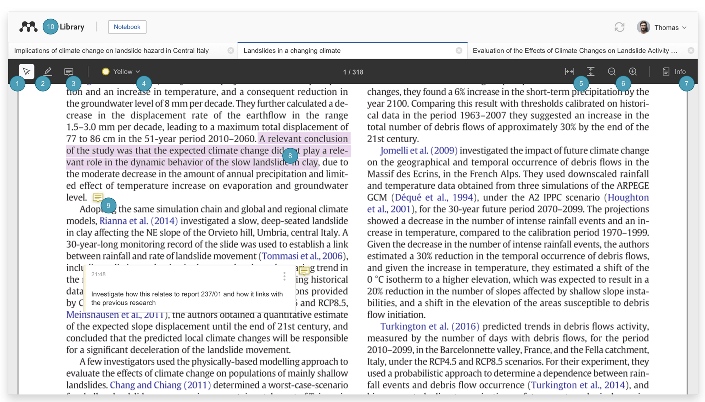
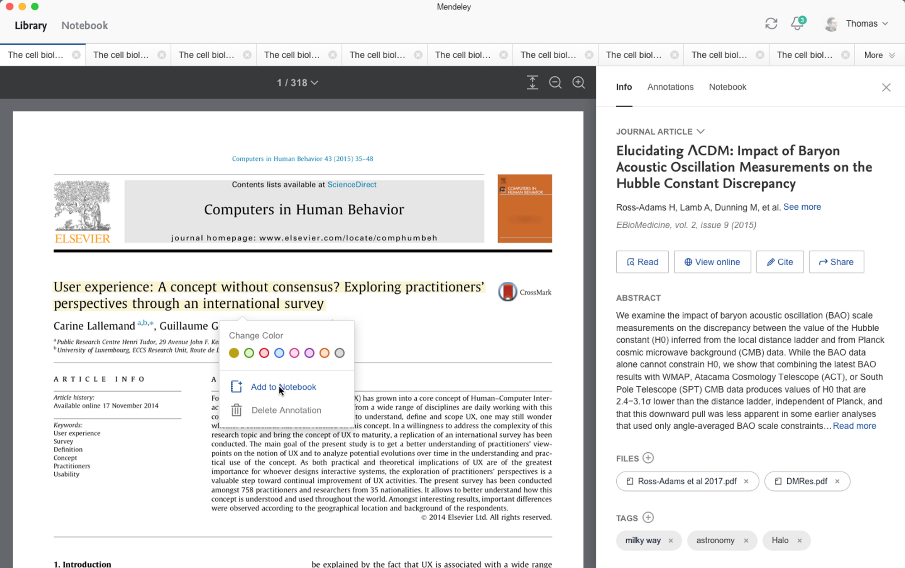
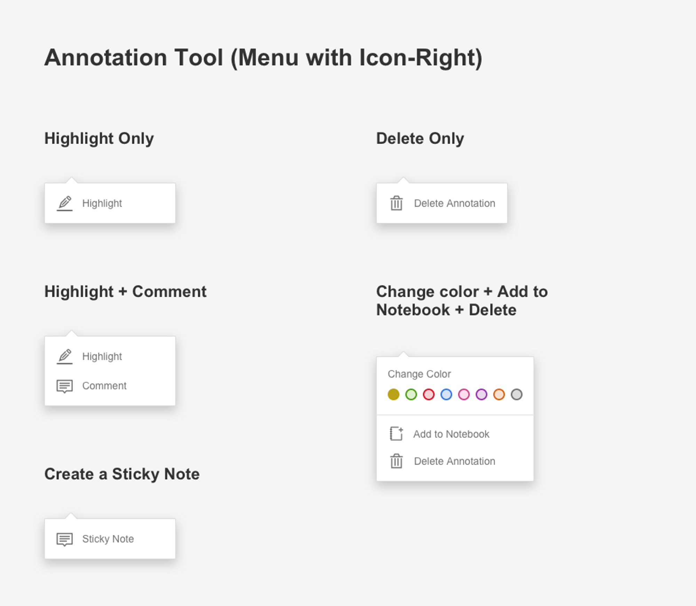
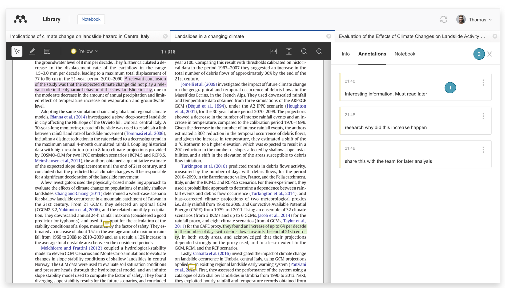
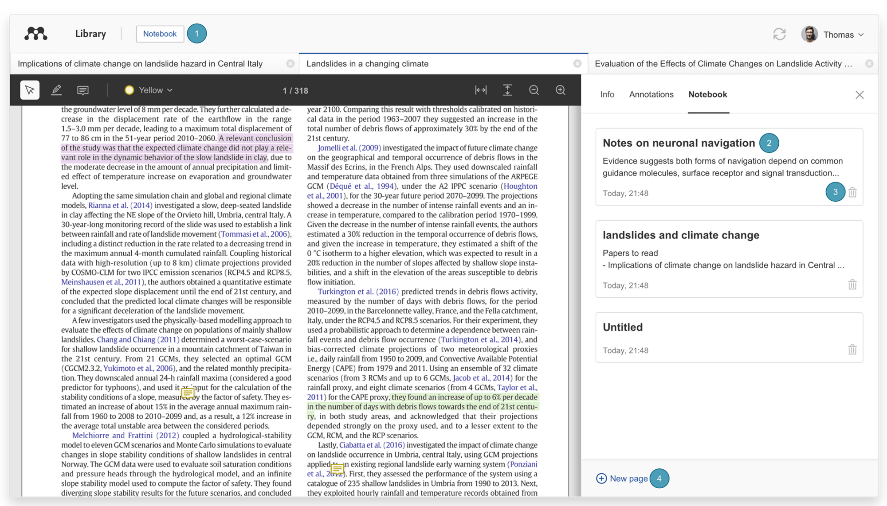
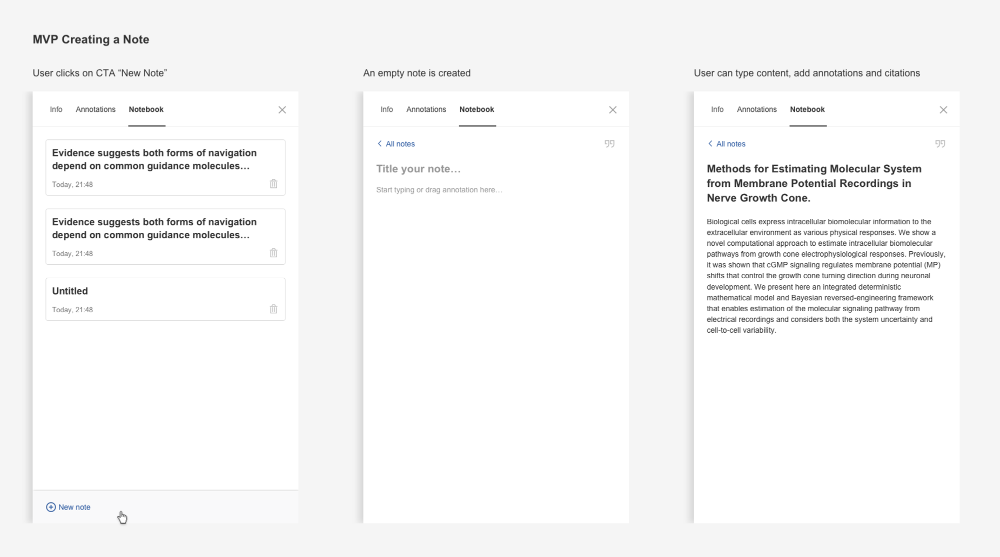
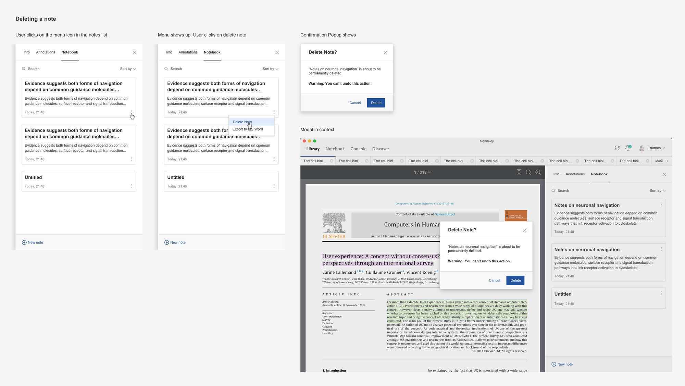
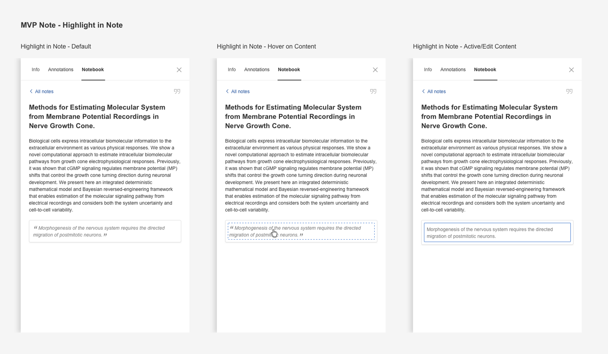
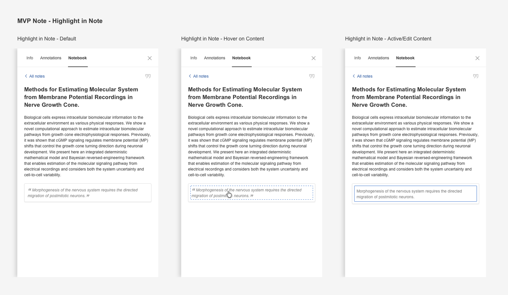

mrm reader
a break-down of the interface's key features and interactions
The new enhanced reader allows users to read, highlight, annotate PDFs and keep all their notes across multiple documents in one place.
Overview
The users can read, highlight and annotate PDFs and keep notes with their thoughts across multiple documents in one place.
Text select tool- Select text within a document to copy/paste relevant passages or apply highlighting
Highlight tool - Highlight text within the document
Sticky Note tool - Create sticky notes at specific locations within the document
Color selection - Set the color of the notes and highlights
Fit to width or height - Fit the PDF to the available width or height of the screen
Zoom - Zoom in and out of the PDF
Info - Open the Info panel. For more details about the tabs in the Info panel see the 'Annotations' tab and Mendeley Notebook sections below
Highlighted text - Select a passage of highlighted text to modify or remove the highlighting or to add the highlight to the Notebook
Sticky note - Sticky notes within the document will be represented by icons and selecting them will reveal the contents of the respective sticky note
Library - Navigate back to the reference list
In page tool
 Annotations tab
To see all sticky notes on the PDF open the right sidepanel and select the 'Annotations' tab.
Sticky note - All sticky notes from the selected PDF are visible here
Close - Select this to close the panel
Notebook
All the highlights and comments across multiple PDFs will be kept securely in one place.
Notebook pages aren't tied to a specific reference and allow the users to add highlights from many PDFs to a single page.
Access your Notebook - Select the Notebook
See your Notebook pages - Select a title to open the page
Delete Notebook pages - Select the trash icon next to the page to delete it
Create new Notebook pages - Select this to create a new, blank page. You can create as many Notebook pages as you need
Create and delete notes
 Note structure
 

Title - Add a title that will also be visible in the list of all Notebook pages
Body - Type into the body of the Notebook page
Highlights - Any highlights that were added to the Notebook page will be italicized and bordered and selecting any highlight will direct back to the source